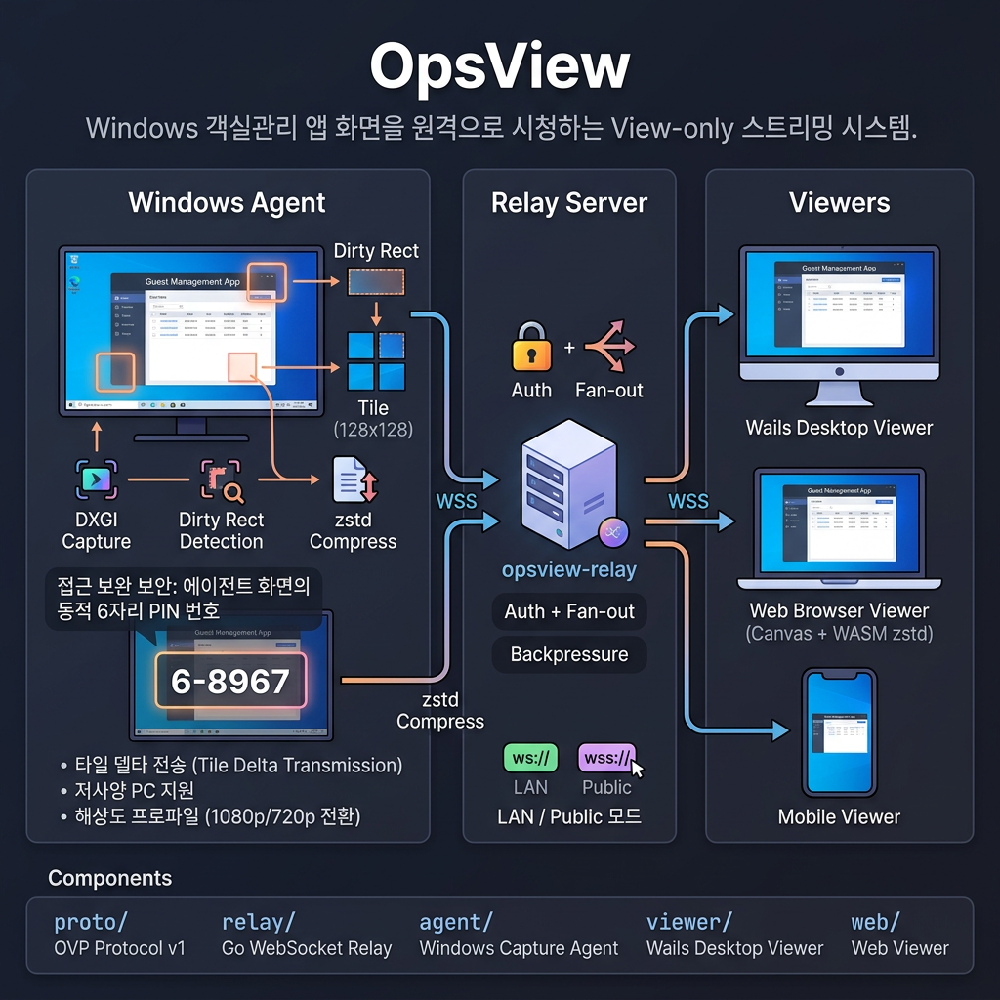

타일 델타 전송, 해상도 프로파일, PIN 보안, CCTV 통합까지 — 어디서든 안전하고 빠르게 원격 데스크톱을 관리하세요.
고성능 원격 데스크톱을 위한 모든 것
변경된 화면 영역만 전송하여 대역폭을 최소화하고 지연 시간을 줄입니다.
내부 네트워크에서는 직접 연결, 외부에서는 릴레이 서버를 통해 접속합니다.
네트워크 상태에 맞춰 해상도와 프레임 레이트를 자동 조절합니다.
4자리 PIN으로 무단 접근을 차단하고, 세션마다 인증을 요구합니다.
RTSP/HLS 스트림을 통합하여 감시 카메라와 원격 데스크톱을 한 곳에서 관리합니다.
키보드, 마우스, 클립보드를 실시간으로 전송하여 현장에 있는 것처럼 작업합니다.
Agent — Relay — Viewer 3-tier 구조

GitHub Releases에서 최신 빌드를 받으세요